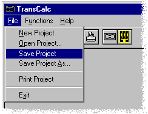

BUTTON from the TOOL BAR and highlight the requested file from the list that appears. Press the OK BUTTON to open the selected file for use.
BUTTON from the TOOL BAR and highlight the requested file from the list that appears. Press the OK BUTTON to open the selected file for use.Getting Started
Step 8
Saving a Project
To save the calculations in this project, select the Save Project command from the File menu, or press the Save Project BUTTON on the TOOL BAR.

Type in the file name chosen. (Up to 8 characters are permitted). The extension .XCL will automatically be applied to all TransCalc files.
Retrieving Projects
To retrieve a saved file, select the Open Project command from the File menu, or press the Open Project BUTTON from the TOOL BAR and highlight the requested file from the list that appears. Press the OK BUTTON to open the selected file for use.